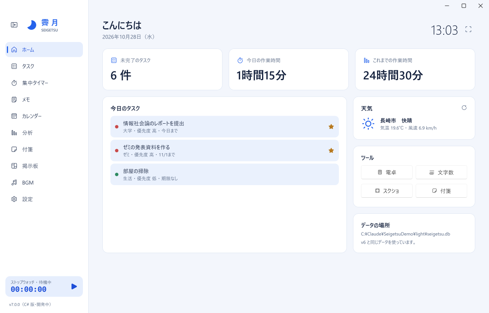
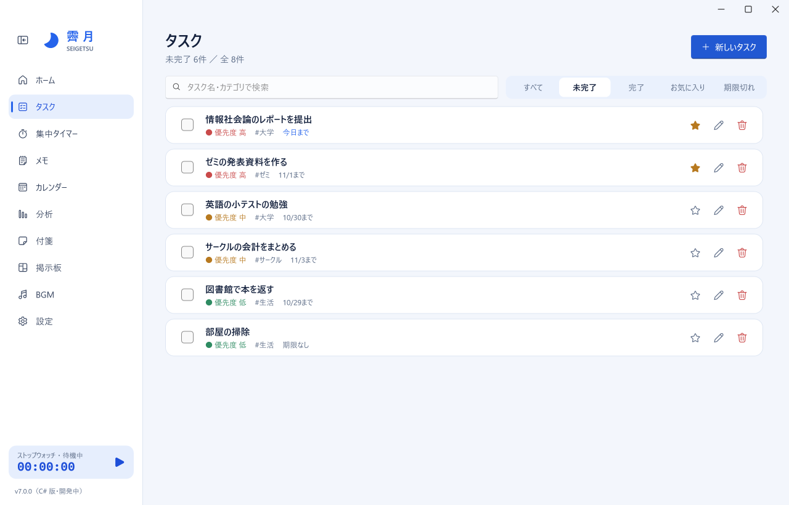
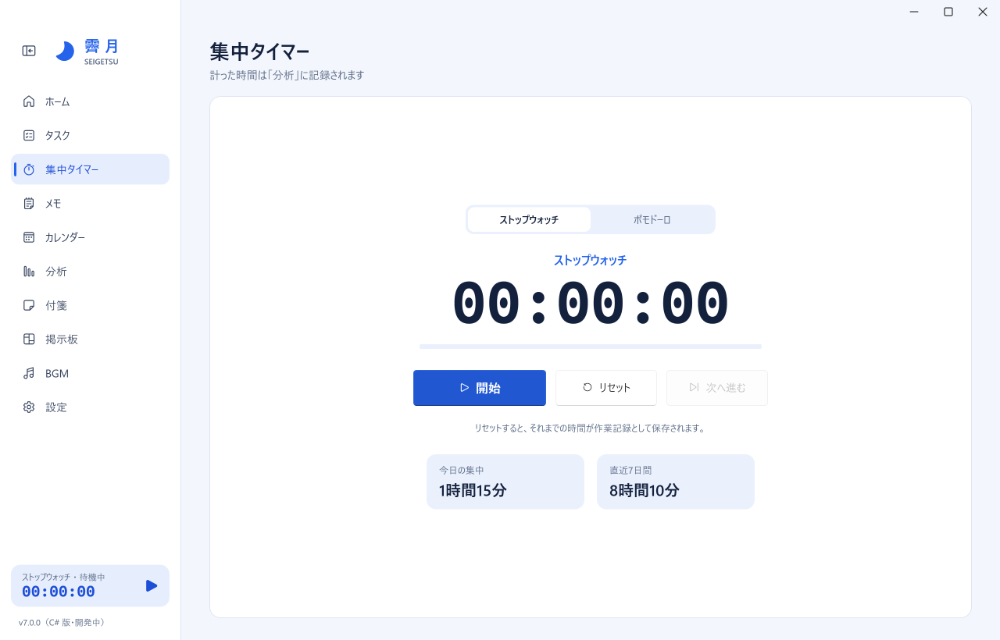
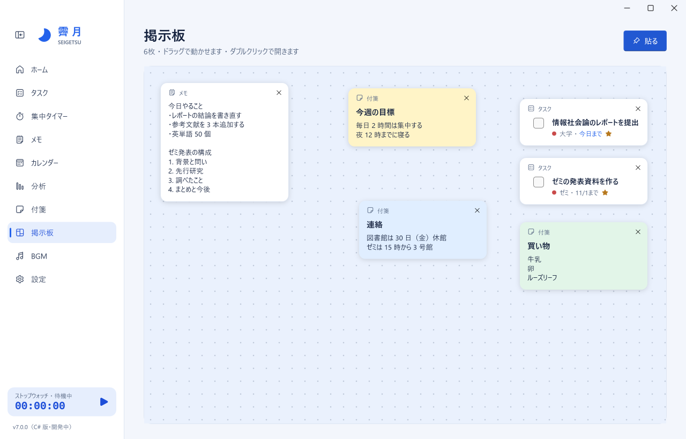
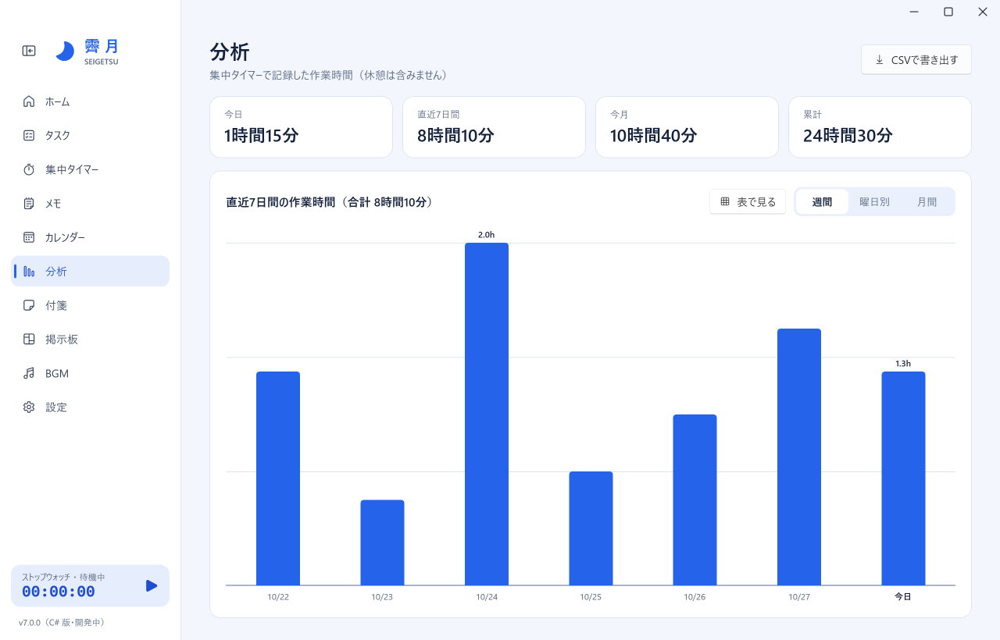

やることを、締切と優先度で整理
今日まで・期限切れのタスクは色で目立たせ、お気に入りは上に並べます。
- 検索と、未完了・完了・お気に入り・期限切れの絞り込み
- 締切が今日や過ぎたタスクを、1 日 1 回 Windows の通知でお知らせ
SEIGETSU
勉強や作業に必要なものを、ひとつの窓に。
タスク・集中タイマー・メモ・付箋・掲示板・BGM をまとめた、Windows 用の無料の作業アシスタントです。
Windows 10 / 11（64 ビット）・無料・管理者の権限は不要

毎日の作業に使うものを、行ったり来たりせずに使えます。
優先度・締切・カテゴリ・お気に入り。締切が来たら Windows の通知でお知らせ。
ストップウォッチ・ポモドーロと、普通のタイマー。計った時間は自動で記録されます。
何枚でも作れて、名前を付けて一覧から切り替え。書いたそばから自動で保存し、テキストファイルにも書き出せます。
6 色の付箋。デスクトップに貼り出して、壁紙の上に置いておけます。ほかのアプリのじゃまをしません。
メモ・付箋・タスクを好きな場所に貼って並べる、自分だけのボード。
締切のある日がひと目でわかる。日付を選んでタスクを追加。
作業時間を週間・曜日別・月間のグラフで。CSV にも書き出せます。
手持ちの mp3 / wav / ogg を流すプレイヤー。画面を移っても流れ続けます。
今日まで・期限切れのタスクは色で目立たせ、お気に入りは上に並べます。

ストップウォッチとポモドーロ（作業と休憩をくり返す方法）、時間を決めて計る普通のタイマーから選べます。

掲示板には、メモや付箋やタスクをドラッグで自由に配置できます。付箋はデスクトップに貼り出すこともできます。

今日・直近 7 日・今月・累計の作業時間と、週間・曜日別・月間のグラフ。表でも見られます。

3 ステップで使い始められます。
タスクやメモは、あなたの PC の中だけに保存されます。
データは %APPDATA%\akidesk に保存されます。更新やアンインストールをしても消えません。
1 日 1 回、同じフォルダの backups-v7 に写し、7 日分を残します。
タスクと作業記録を、表計算ソフトで開ける形に書き出せます。
| 機能 | 送るもの | 送り先 |
|---|---|---|
| 天気 | 設定画面で入れた地域名と、その場所の緯度・経度 | Open-Meteo（無料の天気サービス） |
| 自動更新 | 新しい版があるかの確認 | GitHub |
この 2 つのほかに、データを送ることはありません。
| Ctrl + 1〜9、0 | 画面を切り替える（ホーム・タスク・集中タイマー・メモ・カレンダー・分析・付箋・掲示板・BGM・設定の順） |
| Ctrl + N | 新しいタスク |
| Ctrl + B | 左のメニューを開く／閉じる |
| F11 | 時計の大画面表示（Esc で戻る） |
| Ctrl + Enter | 付箋の入力画面で保存 |
| Ctrl + Q | 霽月を終わる |
かかりません。アカウントの登録もいりません。
霽月にはまだコード署名がないため、初めて開くときに Windows がこの確認を出します。「詳細情報」を押すと出てくる「実行」で進めてください。
できます。設定画面の「ウィンドウの × ボタン」で「タスクトレイに格納する」を選ぶと、タイマーや BGM を動かしたまま画面だけを隠せます。タスクトレイのアイコンから、いつでも開けます。
できます。設定画面の「Windows の起動時」で「自動で起動する」を選んでください。自動で起動した霽月は最小化しておきます（× ボタンを「タスクトレイに格納する」にしているときは、タスクトレイに入れておきます）。
Windows の「設定」→「アプリ」→「インストールされているアプリ」から霽月を選んで「アンインストール」を押します。データは残るので、消したいときは %APPDATA%\akidesk フォルダを削除してください。
そのまま使えます。初めて起動したときに、それまでのデータを seigetsu.db.before-v7 として一度だけ写してから使い始めます。v6 と同時に開くのは避けてください。
GitHub の Issues から知らせてください。エラーの記録は %APPDATA%\akidesk\error-v7.log に残ります。